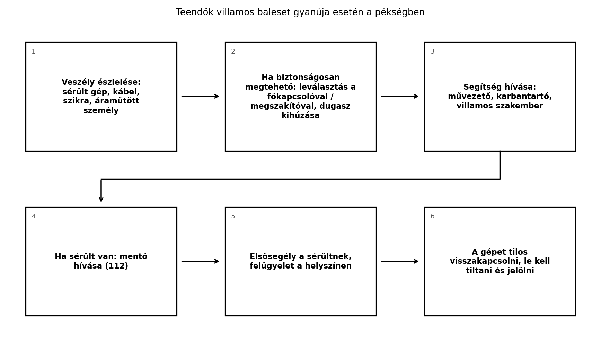

Amikor hajnali háromkor vizes a padló a dagasztógép körül, a közelben gőz csapódik le, és a kezed lisztes vagy nedves, a villamos hiba nem „karbantartói papírmunka”, hanem percek alatt bekövetkező, súlyos baleset forrása lehet. A sütőüzemben a fémgépek, a víz, a só és a hő együtt különösen veszélyessé teszik a villamos berendezéseket. Pék tanulóként nem villanyszerelő leszel, de fel kell ismerned a hibás eszköz jeleit, tudnod kell, kihez fordulj, és értened kell, miért tilos a hibás gépet vagy vezetéket „csak gyorsan” megjavítani.
Ebben az alfejezetben arról tanulunk, mit tesz az áram az emberi testtel, hogyan véd ellene az érintésvédelem és az áram-védőkapcsoló, mit jelent az IP-védettség nedves takarításnál, és hol húzódik a pék feladatának határa.
Egy egyszerű áramkörben az áramforrás, például a hálózat fázisvezetője, a fogyasztón – jelen esetben a testünkön – keresztül záródik. Az áram erősségét Ohm törvénye írja le:
ahol az áramerősség (A), a feszültség (V), pedig a test ellenállása ().
Példa. A hálózati feszültség kb. . Ha valaki száraz bőrrel ér egy feszültség alatt álló részt, a test ellenállása – nagy leegyszerűsítéssel – lehet . Ekkor:
Ez gyakran már érezhető bizsergés. Ha azonban vizes, sós kézzel érintjük ugyanazt a részt, a test ellenállása drasztikusan csökkenhet, például alá. Ekkor:
Ez már életveszélyes tartomány. A fenti számok tanulási példák: a valóságos testellenállást a bőr állapota, az érintkezési felület, a ruházat, a cipő talpa és az áramút is befolyásolja. Az alapüzenet mégis világos: a nedves, sós, lisztes pékségi környezet jelentősen növeli az áramütés kockázatát.
A lenti grafikon ugyanezt a számítást mutatja a testellenállás teljes tartományán. Mindkét tengely logaritmikus, ezért az összefüggés egyenesként látszik: ha az ellenállás tizedére csökken, az áram tízszeresére nő. A jelölt pontok a fenti két példa (100 000 ohm → 2,3 mA; 1 000 ohm → 230 mA) és a 2. feladat két esete (50 000 ohm → 4,6 mA; 800 ohm → 287,5 mA); a sávok a következő szakasz táblázatának tájékoztató hatástartományai.
Figyeld meg, hogy a száraz és a nedves, sós kéz között két nagyságrend a különbség, és a nedves kéz pontja már a súlyos életveszély sávjába esik. A szaggatott 30 mA-es vonal az áram-védőkapcsoló gyakori leoldási értéke: a védőkapcsoló nem korlátozza az áramot, hanem a hibaáramot érzékelve gyorsan lekapcsol – ezért a védelem csak ép, ki nem iktatott kapcsolóval működik. A HTML-kiadásban csúszkával és „száraz / nedves, sós kéz” előbeállítással kipróbálható, melyik sávba esik az áram.
Az áramütés súlyossága nemcsak a feszültségtől függ, hanem az átfolyó áram nagyságától, az áramúttól és az áram átfolyásának időtartamától is.
Definíció. Áramütés akkor jön létre, amikor az emberi test bekerül az áramkörbe, és rajta keresztül áram folyik.
A leggyakoribb pékségi áramút például a kéz–láb vagy a kéz–kéz. A kéz–láb áramút azért különösen veszélyes, mert az áram a mellkason és a szíven is áthaladhat. Az 50 Hz-es váltakozó áram hatásai szemléltető, tanulási értékként:
| Áramerősség (mA, tanulási példa) | Jellemző hatás |
|---|---|
| kb. 0,5–1 | bizsergés, érzékelési küszöb |
| kb. 10 | izomgörcs, „nem tudom elengedni” érzés |
| kb. 30–50 | légzési nehézség, szívritmuszavar veszélye |
| 100 fölött | súlyos életveszély |
Megjegyzés. A fenti értékek tájékoztató jellegűek; a pontos hatás függ az egyéni érzékenységtől, az áramúttól és az időtartamtól. A pék számára az a biztonságos hozzáállás, ha minden villamos érintést életveszélyes eseményként kezel.
Az áram hőhatást, izomgörcsöt, légzésbénulást és szívkamra-fibrillációt okozhat. A hálózati berendezések, kábelek, dugaszok meghibásodása nem „apró üzemzavar”, hanem olyan állapot, amelynél a következő ember, aki hozzáér, sérülhet meg.
A pék leggyakoribb találkozása a villamos balesettel az, amikor valaki áramütést szenved, vagy egy gépen szikrázást, füstöt, égett szagot tapasztal.
Figyelem. Áramütött személyt tilos megfogni, amíg az áramkörben lehet. Először a saját biztonságodat kell megőrizned, majd segítséget hívni.
A biztonságos sorrend vázlata:

A villamos tűznél a vízzel oltás tilos, amíg a berendezés nincs áramtalanítva. Villamos berendezés közelében szén-dioxiddal vagy porral oltó készüléket szabad használni, de a döntés mindig a kiképzés és a helyi tűzvédelmi utasítás szerint történjen.
A pék a gyakorlatban annyit tehet, hogy a gépet a főkapcsolóval leválasztja (a vészleállító csak megállítja a gépet, áramütésnél ez nem elég), ha ezt betanították neki, és azonnal értesíti a műszakvezetőt vagy a karbantartót. Azt, hogy a berendezés valóban feszültségmentes-e, csak villamos szakember ellenőrizheti.
A villamos balesetek két alaptípusa a közvetlen és a közvetett érintés.
Definíció. Közvetlen érintés: az ember közvetlenül hozzáér a feszültség alatt álló aktív részhez, például egy sérült szigetelésű vezetőhöz vagy egy nyitott kapocshoz.
Definíció. Közvetett érintés: az ember egy olyan fémrészt érint meg, amely rendeltetésszerűen nincs feszültség alatt, de testzárlat miatt feszültség alá kerül – például a dagasztógép fémburkolata.
Az érintésvédelem feladata az, hogy a közvetlen és közvetett érintésből származó veszélyt megelőzze vagy megszüntesse. Ennek fontos eszközei a szigetelés, a burkolat, a törpefeszültség, a védőföldelés, a védővezető és az áram-védőkapcsoló.
Definíció. A védővezető (PE-vezető) az a zöld-sárga színű vezető, amely a villamos szerkezet fémtestét olyan módon köti a védelmi rendszerhez, hogy testzárlatnál elvezesse vagy megszüntesse a veszélyt. A mai sütőipari gépek csatlakozókábelében a védővezető megléte életvédelmi követelmény.
Definíció. Az áram-védőkapcsoló (a régi szaknyelvben gyakran FI-relé, életvédelmi kapcsoló) olyan készülék, amely a hozzá tartozó áramkörben méri a fázis- és a nullavezető áramának különbségét, és ha az egy beállított értéket meghalad, azonnal lekapcsolja az áramkört. A nedves, vizes, kültéri vagy fokozottan veszélyes helyeken a 30 mA-es leoldási érték gyakori érintésvédelmi megoldás (ellenőrizendő: az adott pékség villamos terve és a hatályos szabvány szerinti érték).
Megjegyzés. Ha egy áram-védőkapcsoló gyakran leold, az nem az eszköz „rosszaságát” jelenti, hanem arra figyelmeztet, hogy valahol hiba van: testzárlat, nedvesség, sérült szigetelés vagy hibás készülék. A tartós „megoldás” soha nem a védőkapcsoló kiiktatása lehet.
Előírás. A magyar munkavédelmi szabályozás – elsősorban a munkavédelemről szóló törvény és a hozzá kapcsolódó rendeletek – szerint a munkáltató köteles a villamos berendezések biztonságos állapotát fenntartani, a munkavállaló pedig köteles a hibát jelezni, és a berendezést rendeltetésszerűen, a képzésnek megfelelően használni. A villamos berendezések létesítésére, üzemeltetésére és ellenőrzésére vonatkozóan a magyar szabványok – például a kisfeszültségű villamos berendezések létesítéséről szóló MSZ HD 60364 sorozat, a gépi villamos szerelésekről szóló MSZ EN 60204 sorozat, valamint az IP-védettségre vonatkozó MSZ EN 60529 – irányadók (ellenőrizendő: mindegyik szám pontos, hatályos verziója).
A sütőüzemben a víz, a lisztpor és a takarítószerek miatt fontos tudni, hogy egy villamos eszköz mennyire védett a szilárd testek és a víz behatolása ellen.
Definíció. Az IP-védettségi kód (International Protection vagy Ingress Protection) két számjeggyel jellemzi a burkolat védettségét. Az első számjegy a szilárd testek és por elleni védelmet, a második számjegy a víz elleni védelmet mutatja.
A pékségi gyakorlatban leggyakrabban az alábbi jelölésekkel találkozol:
| IP-jelölés | Por/szilárd test ellen (1. szám, tanulási jellemzés) | Víz ellen (2. szám, tanulási jellemzés) | Pékségi szemléltetés |
|---|---|---|---|
| IP44 | 1 mm-nél nagyobb szilárd testek ellen védett | fröccsenő víz ellen védett | általános beltéri hajtás, kapcsolóház |
| IP54 | por ellen védett | fröccsenő víz ellen védett | poros sütőüzemi kapcsolószekrény |
| IP55 | por ellen védett | gyenge vízsugár ellen védett | gyakrabban tisztított gép |
| IP65 | teljes porvédelem | gyenge vízsugár ellen védett | kültéri vagy kemence melletti villamos rész |
| IP67 | teljes porvédelem | időszakos bemerítés ellen védett | nem jellemző a sütőipari gépeknél |
Szabály. Az IP-jelölés a gyártói adatlappal együtt értelmezendő. A magas védettség sem jelenti azt, hogy a villamos berendezésre nagynyomású gőzsugárral, forró vízzel vagy maró takarítószerrel rá lehet spriccelni. A nedves takarításnál ellenőrizned kell, hogy a gép, a kapcsolószekrény és a csatlakozó védettsége megengedi-e a tervezett takarítási módot.
Figyelem. IP44-es jelölésű gép motorját tilos nagynyomású mosóval lemosni. A fröccsenő víz elleni védelem nem vízsugaras tisztítási engedély. A takarítási módot a takarítási tervből és a gépkönyvből kell leolvasni, nem a külső burkolat tisztaságából.
A villamos hibák elhárítása szakmai és jogi szempontból is villamos szakember feladata. A pék tanuló és a betanított dolgozó feladata a hiba felismerése, leállítása, jelzése és a tilalom betartása.
Gépbiztonság. Villamos gépen a pék csak a betanításban meghatározott kezelést végezheti: indítás, leállítás, vészleállítás, a gyártó által megengedett kezelői beállítás. Villamos részekhez nem nyúlhat.
A hibás villamos berendezés gyakori jelei, amelyeket a péknek észrevennie kell:
A csatlakozókábel és a dugasz a gépszemle legkönnyebben ellenőrizhető része. A lenti tablón balra az ép állapot látható: (1) a köpeny sértetlenül fut be a dugasz törésgátló hüvelyébe, és (2) a dugasz belsejében – a kivágásban – a három ér közül a zöld-sárga a védővezető. Jobbra hat gyakori hibakép: (3) megtört, kifehéredett köpeny, (4) vágás, kilátszó erek, (5) a forró kemencefalhoz érő, megolvadt köpeny, (6) a dugaszból kicsúszott köpeny, (7) szigetelőszalagos „javítás” és (8) a dugasz kihúzása a kábelnél fogva.
A 3–7. hibák bármelyikénél a gépet nem szabad használni; a 8. hiba maga okozza a 6.-at, ezért kihúzáskor mindig a dugasz házát fogd. A szemrevételezés nem jelenti, hogy a pék a hibát meg is javíthatja: a teendő a leállítás, a leválasztás, a jelölés és a jelentés. A HTML-kiadásban a képekre mutatva megjelenik a hiba magyarázata.
Szabály. Ha ilyen jelet látsz, a gépet le kell állítani (az üzemi leállító gombbal, közvetlen veszélynél a vészleállítóval), majd a betanított módon le kell választani a hálózatról – a főkapcsolót „0” állásba kell fordítani, vagy az ép dugaszt a házánál fogva kihúzni; a vészleállító megállítja a gépet, de nem választja le –, és azonnal jelezni a művezetőnek vagy a karbantartónak. A hibás gépet meg kell jelölni, például „HIBÁS – TILOS BEKAPCSOLNI” táblával, és a javításig senki sem indíthatja újra.
Tilos. Villamos hibánál a következő cselekvések tilosak, mert áramütést, tüzet vagy rosszabb balesetet okozhatnak:
A pék tehát szemrevételezhet, leállíthat, jelezhet és tiltást tiszteletben tarthat, de villamos mérést, javítást, kapcsolószekrény-nyitást, vezeték- vagy biztosítékcserét nem végezhet.
A műszak elején a pék a gépszemle részeként a villamos állapotot is szemrevételezi. Ez nem feszültségmérés, hanem látható állapotfelmérés.
Higiénia. A nedves takarításnál a villamos biztonság és az élelmiszer-higiénia találkozik: a víz és a tisztítószer a villamos szigetelést károsíthatja, a villamos hiba pedig tüzet vagy üzemleállást okozhat. Ezért a takarítási módot a gépkönyvvel és a takarítási tervvel összehangolva szabad csak elvégezni.
Egy pékségben a dagasztógép csatlakozókábelén repedést vett észre a betanított dolgozó. A kábel a gép mellett, vizes padlón feküdt. A dolgozó meg akarta szigetelőszalaggal „gyorsan” javítani, mert a kenyértészta már a gépben várt. A művezető azonban leállíttatta a gépet, a főkapcsolót kikapcsoltatta, és a gépre hibacédulát tettek. Csak a villanyszerelő ellenőrizte a kábelt, cserélte ki a sérült elemet, és utána indult újra a termelés. A tanulság: a pék azzal védte meg a társait, hogy felismerte a hibát, és nem próbált villamos szerelővé válni. A pár perces késedelem ára nem mérhető össze egy esetleges áramütés következményével.
1. feladat (A) Fogalmazd meg saját szavakkal a közvetlen és a közvetett érintés közötti különbséget, és adj mindkettőre egy-egy sütőüzemi példát.
2. feladat (A) Számítsd ki szemléltető példaként, mekkora áram folyik 230 V-nál, ha a test ellenállása 50 000 ohm, illetve 800 ohm. Melyik eset a veszélyesebb és miért?
3. feladat (B) Egy dagasztógép villamos csatlakozója IP44-es. Nedves takarításnál szabad-e erős vízsugárral a motorra spriccelni? Indokold az IP-számjegy alapján.
4. feladat (B) Sorolj fel legalább öt olyan jelet, ami hibás villamos berendezésre utalhat, és nevezd meg, ki végezheti a javítást.
5. feladat (C) Egy dolgozó azt javasolja, hogy a gyakran leoldó áram-védőkapcsolót ragaszd le, mert zavarja a munkát. Mi a hiba ebben a gondolatban? Mi lehet a valódi ok, és mi a helyes eljárás?
6. feladat (D) A kelesztőkamra ajtajának villamos kábele meg van repedve, a padló vizes. Írd le lépésenként, mit teszel az üzem előtti szemle során és utána.
Önellenőrzés – válaszok
Feladatok – megoldások
1. feladat. A közvetlen érintésnél az ember közvetlenül feszültség alatt álló részhez ér, például eléri a sérült fázisvezetőt. A közvetett érintésnél egy szabályosan feszültségmentes fémrész kerül feszültség alá, például a dagasztógép fémburkolata testzárlat miatt.
2. feladat. A második, 800 ohmos eset veszélyesebb, mert a 287,5 mA az életveszélyes tartományba esik, miközben az első eset inkább érzékeny, de jellemzően nem azonnal életveszélyes. A számok tanulási példák.
3. feladat. Nem szabad. Az IP44 második számjegye 4, ami fröccsenő víz elleni védelmet jelent. Az 5-ös számjegy is csak gyenge vízsugár elleni védettség; erős (nagynyomású, forró) vízsugaras mosás csak akkor megengedett, ha a gépkönyv kifejezetten engedi (ehhez jellemzően IPX9/IP69K jelölés kell; ellenőrizendő: MSZ EN 60529, gépkönyv). A gépet a gépkönyv és a takarítási terv szerint szabad tisztítani.
4. feladat. Például: megsérült kábel, megolvadt dugasz, szikrázás, égésszag, túlmelegedő motor, hiányzó védőburkolat, gyakran leoldó áram-védőkapcsoló. A javítást villamos szakember végezheti.
5. feladat. A leszorítás tilos, mert kiiktatja az érintésvédelmet. A leoldás oka lehet testzárlat, nedvesség, sérült szigetelés, hibás készülék. Először le kell állítani a gépet, meg kell keresni a hibát, és villamos szakemberrel megjavíttatni.
6. feladat. A kábelt nem érintem meg. A kelesztőkamrát nem indítom el. A nedves padló miatt a csatlakozó közeléből távol tartom magam. Jelentem a művezetőnek. A gépet hibásként megjelölöm, és csak villamos szakember ellenőrzése után szabad újra üzembe helyezni. Ha van rá betanított lehetőség, a kamra főkapcsolóját kikapcsolhatom.
A villamos áram a nedves, sós, gőzös pékségi környezetben különösen veszélyes. Az áramütés súlyosságát az átfolyó áram nagysága, az áramút és az időtartam határozza meg. A test ellenállása nedves bőrnél drasztikusan csökken, ezért a sütőüzemi hibákat mindig életveszélyesnek kell tekinteni. Az érintésvédelem a közvetlen és közvetett érintésből származó veszélyt mérsékli; fontos eszközei a védővezető és az áram-védőkapcsoló. Az IP-kód első számjegye a por, második a víz elleni védettséget mutatja. A pék nem villanyszerelő: hibát szemrevételezhet, gépet leállíthat, jelzést tehet, de tilos a villamos javítás, a védővezető kiiktatása, az áram-védőkapcsoló leszorítása és a hibás gép visszakapcsolása. Ezt a szemléletet használjuk a Munkaeszközök és gépek biztonsága alfejezetben a gépek biztonsági berendezéseinél, illetve a Olaj- és gázégők, biztonsági automatikák és a kemence munkavédelme alfejezetben a kemence villamos és vezérlő rendszerénél.